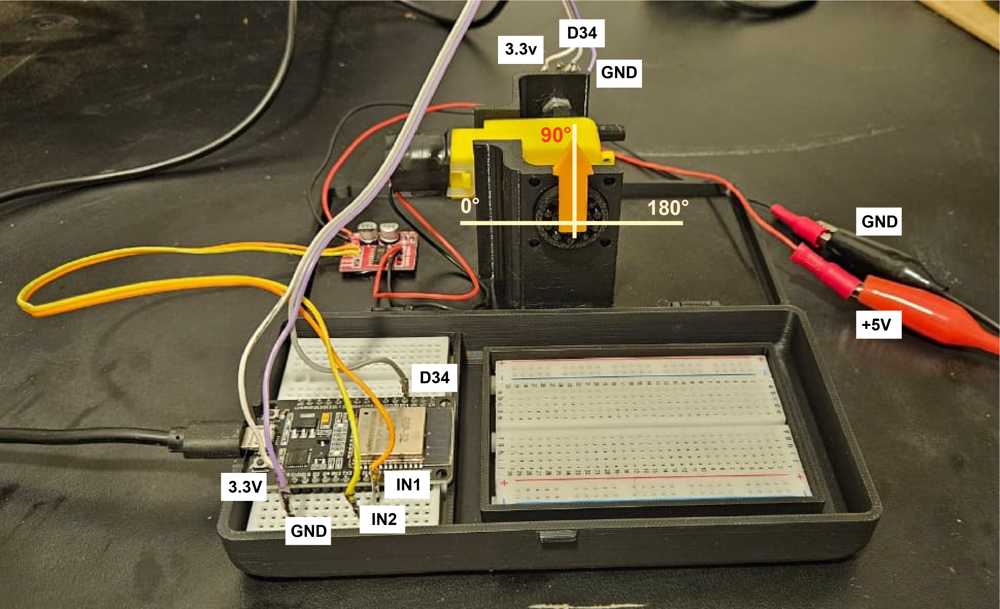

Aula 11:
Controle Estocástico LQG
Prof. Marcos Rogério Fernandes
30 de outubro de 2025
Objetivos
Os objetivos dessa aula são entender:
- Sistemas com ruído;
- Controle Ótimo Estocástico;
- Solução via Programação Dinâmica;
- Controle Ótimo com Filtro de Kalman;
- Exemplos
Modelo em espaço de estados em tempo discreto
$$ \begin{aligned} x_{k+1}&=Ax_k+Bu_k\\ y_k&=Hx_k+Du_k \end{aligned} $$
$A$ e $B$ matrizes equivalentes em tempo discreto.
Modelo em espaço de estados em tempo discreto
Modelo estocástico $$ \begin{aligned} x_{k+1}&=Ax_k+Bu_k+w_k\\ y_k&=Hx_k+Du_k+\epsilon_k \end{aligned} $$
- $w_k \to $ ruído de processo
- $\epsilon_k \to $ ruído de medição
Modelo em espaço de estados em tempo discreto estocástico
Distribuição Gaussiana

Controle Ótimo Estocástico
Objetivo: Obter uma sequência de ações de controle $\{u_k\}_{k=0}^{N-1}$ tal que minimize um critério de desempenho (função custo).
Controle Ótimo Estocástico
Objetivo: Obter uma sequência de ações de controle $\{u_k\}_{k=0}^{N-1}$ tal que minimize um critério de desempenho (função custo).
Controle Ótimo Estocástico
Objetivo: Obter uma sequência de ações de controle $\{u_k\}_{k=0}^{N-1}$ tal que minimize um critério de desempenho (função custo).
Controle Ótimo Estocástico
Objetivo: Obter uma sequência de ações de controle $\{u_k\}_{k=0}^{N-1}$ tal que minimize um critério de desempenho (função custo).
Controle Ótimo Estocástico
Objetivo: Obter uma sequência de ações de controle $\{u_k\}_{k=0}^{N-1}$ tal que minimize um critério de desempenho (função custo).
Controle Ótimo Estocástico
Problema de programação (otimização) matemática: $$ \min_{u_0,u_1,\ldots,u_{N-1}} \quad J\\ \text{tal que} \\ x_{k+1}=f(x_k,u_k)+w_k\\ x_k\in\mathcal{X}\\ u_k\in\mathcal{U}\\ w_k\sim p(w_k) $$
Controle LQR (Linear Quadratic Regulator)
$ J_{0\to N}=\mathbb{E}\left[\sum_{k=0}^{N-1} x_k^T Qx_k+u_k^TRu_k+x_N^T P_N x_N\right], \\Q=Q^T\succeq 0,\quad R=R^\trp \succ 0 $
Dinâmica Linear:$$ x_{k+1}=Ax_k+Bu_k+w_k\\ x_k\in\mathbb{R}^n,\quad u_k\in\mathbb{R}^m\\ w_k\sim \mathcal{N}(0,Q) $$
Controle Ótimo Estocástico Linear
Problema de programação (otimização) matemática: $$ \min_{u_0,u_1,\ldots,u_{N-1}} \quad \mathbb{E}\left[\sum_{k=0}^{N-1} x_k^T Qx_k+u_k^TRu_k+x_N^T P_N x_N\right] \\ \text{tal que} \\ x_{k+1}=Ax_k+Bu_k+w_k\\ x_k\in\mathbb{R}^n,\quad u_k\in\mathbb{R}^m\\ w_k\sim \mathcal{N}(0,Q) $$
Princípio de Otimalidade de Bellman
Princípio de Otimalidade de Bellman
Princípio de Otimalidade de Bellman
Princípio de Otimalidade de Bellman
Então, para qualquer $k\in (0,N)$, tem-se: $\{x_k^*,x_{k+1}^*,\ldots,x_N^*\}$ e $\{u_k^*,u_{k+1}^*,\ldots,u_{N-1}^*\}$ são a trajetória ótima de estados e as ações ótimas de controle, respectivamente, que minimizam $J_{k\to N}$
Equação de Bellman
$$ V_k(x_k)=\min_{u_k} \mathbb{E}[\underbrace{x_k^\trp Q x_k + u_k^\trp R u_k}_{\text{custo por estágio}} + \underbrace{V_{k+1}(x_{k+1})}_{\text{custo ``to-go"}}] $$
Base da programação dinâmica estocástica!
Equação de Bellman
Equação de Bellman
Equação de Bellman
$$ V_k(x_k)=\min_{u_k} \mathbb{E}[x_k^\trp Q x_k + u_k^\trp R u_k + V_{k+1}(x_{k+1})] $$
Hipótese:
$$ V_{k+1}(x_{k+1})=x_{k+1}^\trp P_{k+1}x_{k+1}+c_{k+1}, \quad P_{k+1}=P_{k+1}^\trp \succ 0 $$Equação de Bellman
$$ V_k(x_k)=\min_{u_k} \underbrace{\mathbb{E}[x_k^\trp Q x_k + u_k^\trp R u_k + x_{k+1}^\trp P_{k+1}x_{k+1}+c_{k+1}]}_{g(x_k,u_k)} $$
LQR: Custo quadrático+dinâmica linear+ruído Gaussiano gera um problema convexo! (possui apenas um mínimo)
$$ \frac{\partial g(x_k,u_k)}{\partial u_k}=0 $$Propriedades de derivadas no $\mathbb{R}^n$
Propriedades de derivadas no $\mathbb{R}^n$
Propriedades de derivadas no $\mathbb{R}^n$
Propriedades de derivadas no $\mathbb{R}^n$
Propriedades de derivadas no $\mathbb{R}^n$
Propriedades de derivadas no $\mathbb{R}^n$
Propriedades de derivadas no $\mathbb{R}^n$
Propriedades de derivadas no $\mathbb{R}^n$
Propriedades de derivadas no $\mathbb{R}^n$
Propriedades de derivadas no $\mathbb{R}^n$
Propriedades de derivadas no $\mathbb{R}^n$
Propriedades de derivadas no $\mathbb{R}^n$
Solução de Controle Ótimo Estocástico (LQR):
$$ u^*_k=-\underbrace{(R+B^\trp P_{k+1}B)^{-1}B^\trp P_{k+1}A}_{K}x_k $$
- Realimentação de estados!
- Ganho depende de $P_{k+1}$.
Equação de Bellman
$$ V_k(x_k)=\mathbb{E}[x_k^\trp Q x_k + (u_k^*)^\trp R u_k^* + x_{k+1}^\trp P_{k+1}x_{k+1}+c_{k+1}]\\ x_{k+1}=Ax_k+Bu^*_k+w_k $$
Com $$ u^*_k=-\underbrace{(R+B^\trp P_{k+1}B)^{-1}B^\trp P_{k+1}A}_{K}x_k,\quad V_k(x_k)=x_k^\trp P_k x_k+c_k $$Equação Recursiva de Riccati
$$ x_k^\trp P_k x_k+c_k \\=x_k^\trp(Q +A^\trp P_{k+1}A-A^\trp P_{k+1}B(R+B^\trp P_{k+1}B)^{-1}B^\trp P_{k+1}A )x_k +\\+\tr[P_{k+1}]+c_{k+1} $$
Então,Equação de Riccati p/ Tempo Discreto: $$ P_k =Q +A^\trp P_{k+1}A-A^\trp P_{k+1}B(R+B^\trp P_{k+1}B)^{-1}B^\trp P_{k+1}A \\ c_k=\tr[P_{k+1}]+c_{k+1} $$
Solução da Equação de Riccati
$$ P_{N-1} =Q +A^\trp P_{N}A-A^\trp P_{N}B(R+B^\trp P_{N}B)^{-1}B^\trp P_{N}A $$
Para $k=N-2$,$$ P_{N-2} =Q +A^\trp P_{N-1}A-A^\trp P_{N-1}B(R+B^\trp P_{N-1}B)^{-1}B^\trp P_{N-1}A $$
Para $k=N-3,\ldots, 1, 0$,$$ P_k =Q +A^\trp P_{k+1}A-A^\trp P_{k+1}B(R+B^\trp P_{k+1}B)^{-1}B^\trp P_{k+1}A $$
Exemplo
$$ x_{k+1}=\begin{bmatrix} 0.8917 & 0.1790\\ -0.1558 & 0.8631 \end{bmatrix}x_k+\begin{bmatrix} 0.0177 \\ 0.1790 \end{bmatrix}u_k+w_k $$
Obtenha o controle ótimo LQR de horizonte finito com $N=100$ e $$ Q=\begin{bmatrix}2 & 0 \\ 0 & 3\end{bmatrix},\quad R=1,\quad P_N=0.1I,\quad w_k\sim \mathcal{N}(0,0.1I) $$Controle LQR (Linear Quadratic Regulator)
$$ J_\infty = \lim_{N\to \infty} \sum_{k=0}^{N} \frac{1}{N}\mathbb{E}[x_k^T Qx_k+u_k^TRu_k], $$
com $$ Q=Q^T\succeq 0,\quad R=R^\trp \succ 0 $$Solução Estacionária da Eq. de Riccati
$$ P_\infty =Q +A^\trp P_\infty A-A^\trp P_\infty B(R+B^\trp P_\infty B)^{-1}B^\trp P_\infty A $$
Lei de Controle Ótimo: $$ u^*_k=-\underbrace{(R+B^\trp P_\infty B)^{-1}B^\trp P_\infty A}_{K}x_k $$
Exemplo
$$ x_{k+1}=\begin{bmatrix} 0.8917 & 0.1790\\ -0.1558 & 0.8631 \end{bmatrix}x_k+\begin{bmatrix} 0.0177 \\ 0.1790 \end{bmatrix}u_k+w_k $$
Obtenha o controle ótimo LQR de horizonte infinito e $$ Q=\begin{bmatrix}2 & 0 \\ 0 & 3\end{bmatrix},\quad R=1,\quad P_N=0.1I,\quad w_k\sim \mathcal{N}(0,0.1I) $$Linear Quadratic Guassian Regulator
LQR+Filtro de Kalman = LQG
Modelo Servo Motor
$$ \begin{bmatrix} \dot{\theta} \\ \ddot{\theta}\\ \dot{i} \end{bmatrix}=\begin{bmatrix} 0 & 1 & 0\\ 0 & -\frac{b}{J} & \frac{k_t}{J}\\ 0 & -\frac{K_b }{L} & -\frac{R}{L} \end{bmatrix}\begin{bmatrix} \theta \\ \dot{\theta}\\ i \end{bmatrix}+\begin{bmatrix} 0 \\ 0 \\ \frac{k_a}{L} \end{bmatrix}u+dW $$ e $$ y=\begin{bmatrix} 1 & 0 & 0 \end{bmatrix}x+d\epsilon $$
Controle Servo Motor

Controle LQR com apenas medições ruidosas da posição $\theta$!